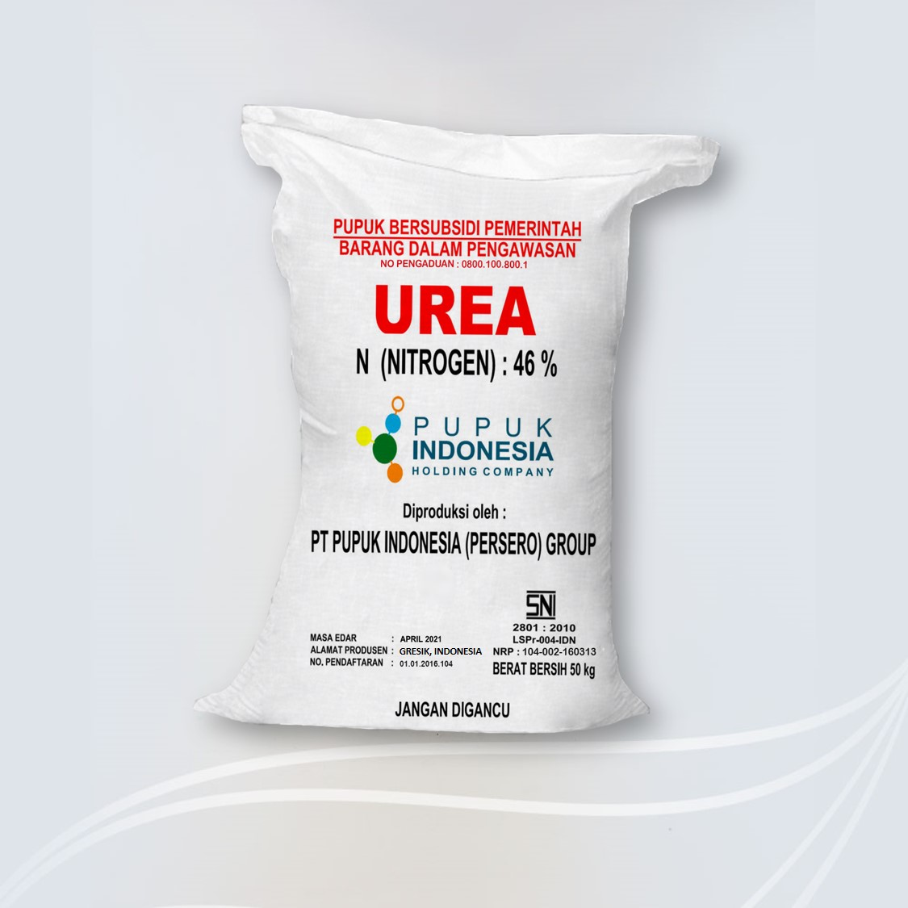
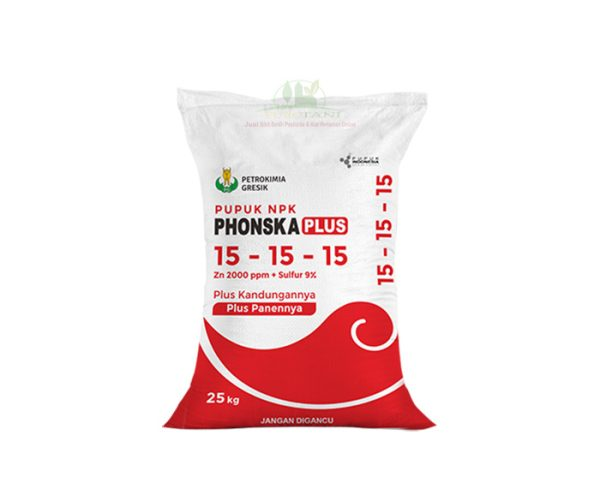
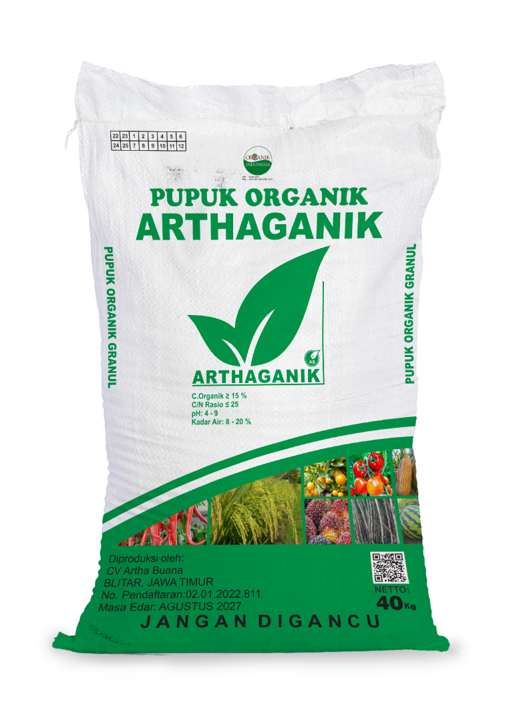

|
 1. Pupuk UreaPupuk kimia dengan kadar Nitrogen tinggi. Penting untuk pertumbuhan awal agar daun lebih hijau, rimbun, dan segar. |
 2. Pupuk Phonska (NPK)Pupuk majemuk (NPK) untuk memperkuat batang tanaman dan meningkatkan kualitas biji atau buah saat panen. |
 3. Pupuk OrganikTerbuat dari pelapukan sisa makhluk hidup. Berfungsi memperbaiki struktur tanah agar lahan tetap subur jangka panjang. |